Updates of THE EPE CHEATSHEET — (Standard Edition)
Contact UsOct 2026 Edition | Last updated: 2026-10-01

Table of Contents
- Update #s1 — Serious Criminality sentence threshold: ≥6 months → >6 months
- Update #s2 — Reporting Change of Info: 30 Days / s.40 → 15 Days / Reg. s.3.1
- Update #s3 — Abuse of Discretion: 3 sub-bullets missing after "such as:"
- Update #s4 — Common Removal Order Situations: FN Overstaying / Non-compliance → Exclusion Order (not Departure Order)
- Update #s5 — Conditional Removal Order: "effective immediately" → comes into force per IRPA s.49(2)
- Update #s6 — Perfect the Record deadline: 75 Days → 120 Days (June 2026 Special Order)
- Update #s7 — eTA Expansion: Remove Qatar from visa-required country examples
- Update #s8 — SOWP Table: rename "PA" to "Partner"; fix In-Canada Class trigger
Update #s1 — Serious Criminality sentence threshold: ≥6 months → >6 months
Original Content
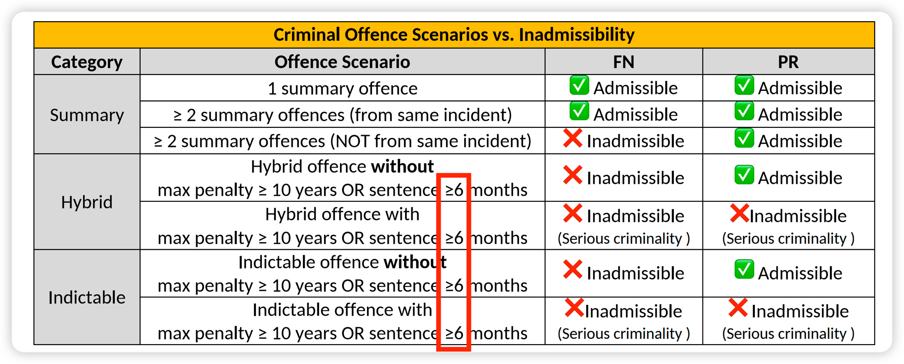
Updated Content
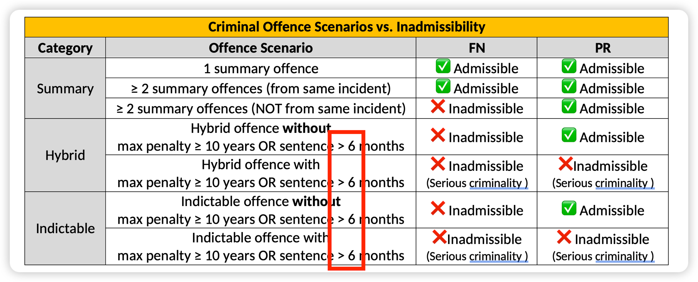
6 months threshold" class="update-img">Explanation
The term Serious Criminality is used in two distinct contexts in IRPA, and the sentence threshold is very subtly different in each:
| Serious Criminality — Threshold by Context | |||
|---|---|---|---|
| Context | Provision | Sentence threshold (in Canada) | Meaning |
| Inadmissibility | IRPA s. 36(1)(a) | > 6 months | A sentence of exactly 6 months does NOT trigger inadmissibility for serious criminality |
| Loss of IAD appeal right | IRPA s. 64(2) | ≥ 6 months | A sentence of exactly 6 months DOES strip the IAD appeal right |
The key takeaway: A sentence of exactly 6 months sits in the gap — the person is not inadmissible for serious criminality under IRPA s. 36(1)(a), but if they are inadmissible through the other limb (max ≥ 10 years), they also lose their IAD appeal right under IRPA s. 64(2).
| Serious Criminality — Scenario Examples | |||
|---|---|---|---|
| Max penalty | Actual sentence | Inadmissible for Serious Criminality? (IRPA s. 36(1)(a)) | Has IAD Appeal Right? (IRPA s. 64(2)) |
| ≥ 10 yrs | < 6 months (e.g. 3 months) |
✅ Yes (max ≥10 yrs limb) | ✅ Yes (s.64 not triggered) |
| = 6 months exactly | ✅ Yes (max ≥10 yrs limb) | ❌ No (≥6 months, s.64 strips appeal) | |
| > 6 months (e.g. 7 months) |
✅ Yes (both limbs) | ❌ No (≥6 months, s.64 strips appeal) | |
| < 10 yrs | < 6 months (e.g. 3 months) |
❌ No (neither limb met) | N/A (s.64 not engaged) |
| = 6 months exactly | ❌ No (neither limb met) | N/A (s.64 not engaged) | |
| > 6 months (e.g. 7 months) |
✅ Yes (>6 months limb) | ❌ No (≥6 months, s.64 strips appeal) | |
Update #s2 — Reporting Change of Info: 30 Days / s.40 → 15 Days / Reg. s.3.1
Original Content
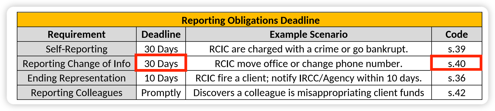
Updated Content
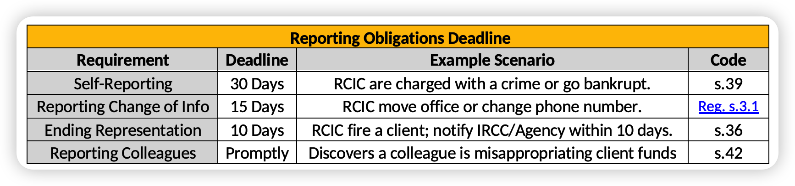
Explanation
The Reporting Change of Info row in the Reporting Obligations Deadline table has two places that need to be updated:
| Reporting Change of Info — Corrections | ||
|---|---|---|
| Field | Was | Now |
| Deadline | 30 Days | 15 calendar days |
| Code | s.40 (Code of Professional Conduct — "Response to College") | Reg. s.3.1 (Changes in Information Regulation 2021-001) |
The correct authority is Changes in Information Regulation 2021-001, s.3.1, which states: "Every RCIC shall, within fifteen (15) calendar days of an effective change, notify the Council in writing of any changes" to their address, phone number, email, client account details, and more.
Update #s3 — Abuse of Discretion: 3 sub-bullets missing after "such as:"
What Was Missing
In the Abuse of Discretion flashcard, the last bullet reads "…falls outside the 'range of possible, acceptable outcomes', such as:" — but the three sub-bullets that follow were missing from the printed version.
Correct Content
| Abuse of Discretion |
|---|
|
Update #s4 — Common Removal Order Situations: FN Overstaying / Non-compliance → Exclusion Order (not Departure Order)
Original Content
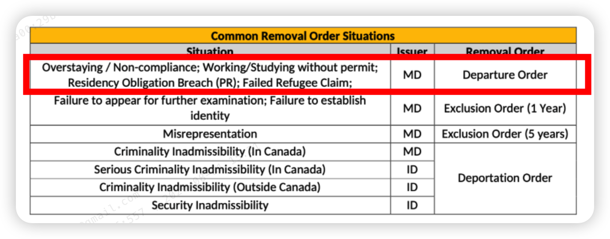
Updated Content
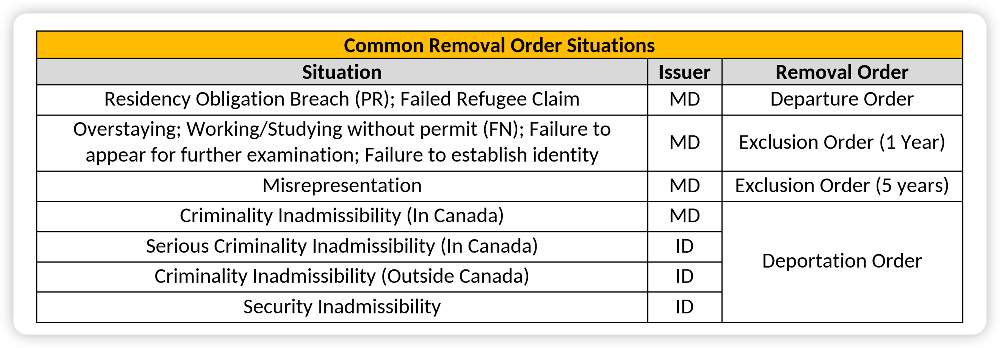
What Changed
The original first row grouped four situations under a single Departure Order. Two of those situations are incorrect for foreign nationals: IRPR 228(1)(c)(iv) specifies an exclusion order for a foreign national who fails to leave Canada by the end of their authorized period (overstaying), and IRPR 228(1)(c)(v) specifies an exclusion order for failing to comply with conditions of temporary residence (including work and study authorization).
Update #s5 — Conditional Removal Order: "effective immediately" → comes into force per IRPA s.49(2)
Original Content
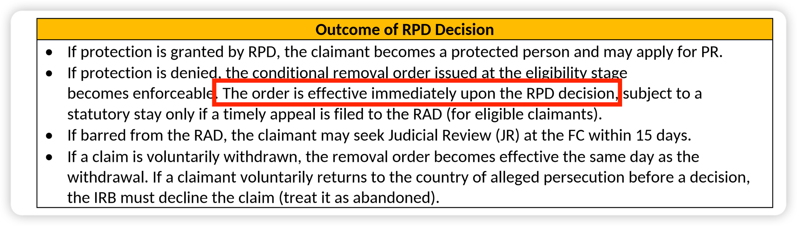
Updated Content
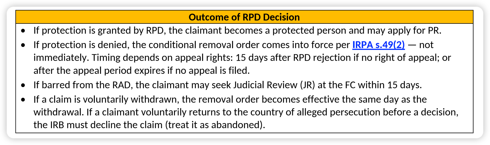
What Changed
"Effective immediately upon the RPD decision" is inaccurate. IRPA s.49(2) sets out when a conditional removal order comes into force — the timing is never immediate upon the RPD decision:
| Scenario | Order comes into force | Authority |
|---|---|---|
| RPD rejects — no right of appeal | 15 days after notice of rejection | s.49(2)(c) |
| RPD rejects — appeal right exists, but no appeal filed | The later of: day after appeal time limit expires, and 15 days after notice of rejection | s.49(2)(d) |
| RAD dismisses appeal | 15 days after notice of RAD rejection | s.49(2)(e) |
Update #s6 — Perfect the Record deadline: 75 Days → 120 Days
Original Text
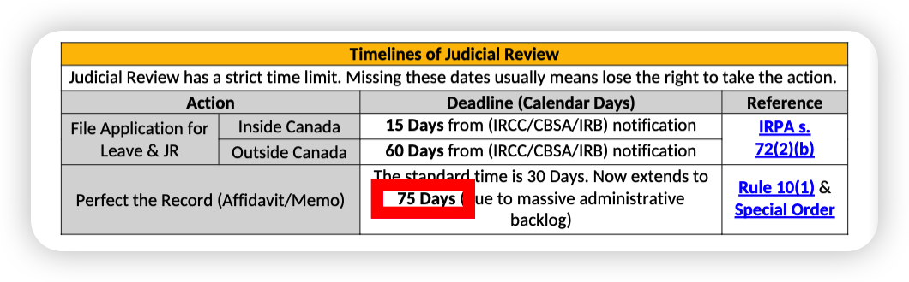
Updated Text
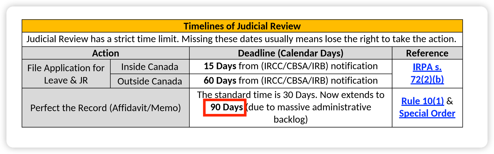
Explanation
Effective June 26, 2026, the Federal Court Special Order grants applicants an extension of 90 days on top of the standard 30-day deadline under Rule 10(1) of the FCCIRPR. The total deadline to perfect an application for leave is therefore 120 days (30 Days standard + 90-Day Special Order extension). This supersedes the May 2025 Special Order, which had set the total at 75 days.
The Court cited an unprecedented caseload — projected to exceed 30,000 immigration filings in 2026 (nearly five times pre-pandemic levels) — as the reason for the further extension.
Source: Federal Court — Consolidated Immigration Practice Guidelines (August 12, 2026)
Update #s7 — eTA Expansion: Remove Qatar from visa-required country examples
Original Text
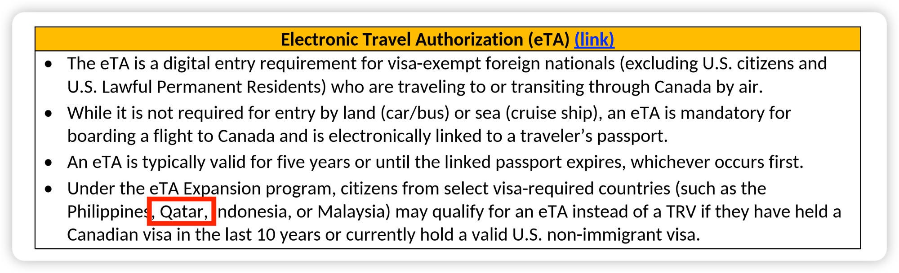
Updated Text
| Electronic Travel Authorization (eTA) |
|---|
|
Explanation
Qatar is a visa-exempt country, not a visa-required country.
Update #s8 — SOWP Table: rename "PA" to "Partner"; fix In-Canada Class trigger
Original Text
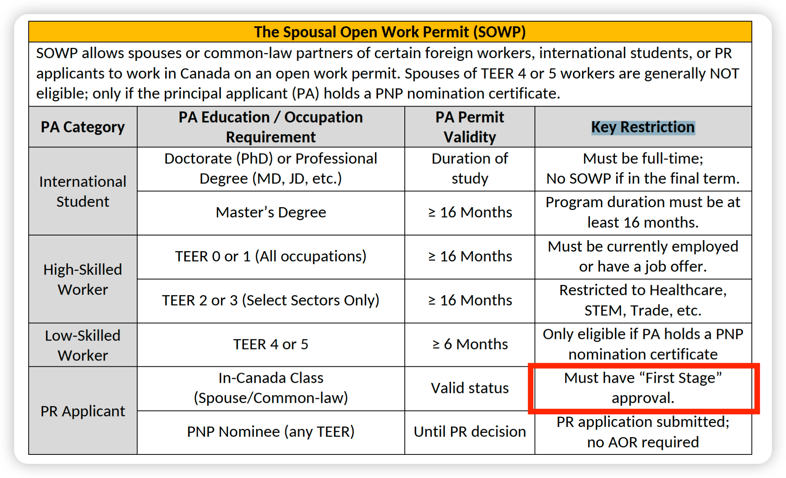
Updated Text
| The Spousal Open Work Permit (SOWP) | |||
|---|---|---|---|
| SOWP lets the spouse or partner (SOWP applicant) of an eligible worker, student, or PR applicant (their Partner) work in Canada on an open work permit. | |||
| Partner Category | Partner Requirement | Partner Permit Validity | Key Restriction |
| International Student | Doctorate (PhD) or Professional Degree (MD, JD, etc.) | Duration of study | Must be full-time; No SOWP if in the final term. |
| Master's Degree | ≥ 16 Months | Program duration must be at least 16 months. | |
| High-Skilled Worker | TEER 0 or 1 (All occupations) | ≥ 16 Months | Must be currently employed or have a job offer. |
| TEER 2 or 3 (Select Sectors Only) | ≥ 16 Months | Restricted to Healthcare, STEM, Trade, etc. | |
| Low-Skilled Worker | TEER 4 or 5 | ≥ 6 Months | Only eligible if Partner holds a PNP nomination certificate |
| PR Applicant | In-Canada Class (Spouse/Common-law) |
—— | Partner has valid status: AOR received. Partner's status expired: First Stage approval. |
| PNP Nominee (any TEER) | —— | PR application submitted; no AOR required |
|
Explanation
Two updates: "PA" is replaced with "Partner" throughout the table, and the In-Canada Class Key Restriction now correctly shows separate triggers for valid status (AOR) and expired status (First Stage approval).